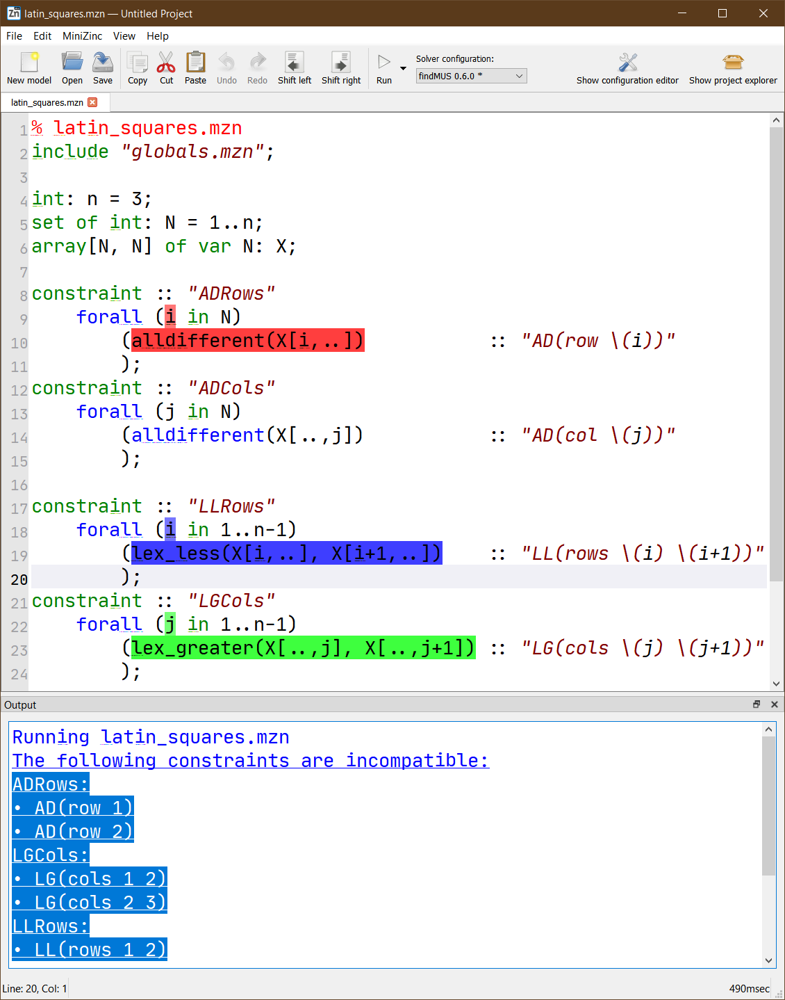
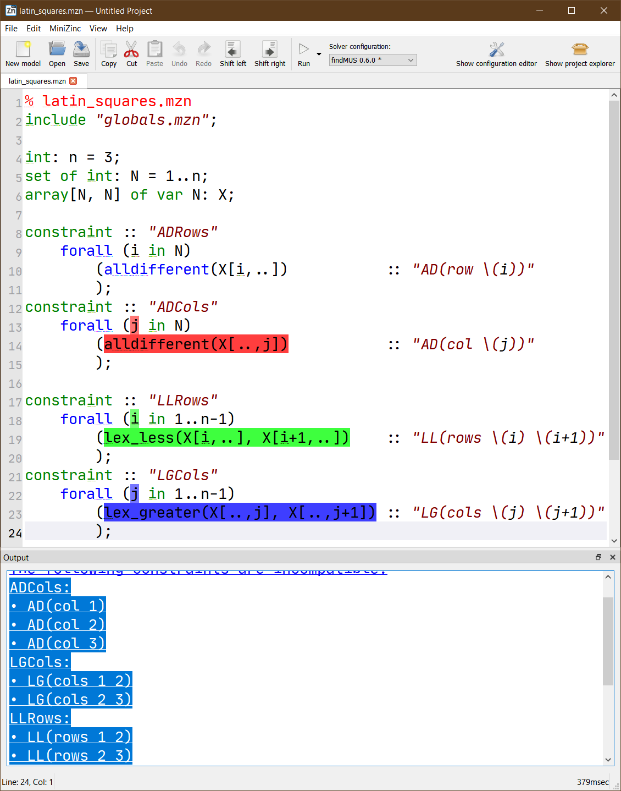
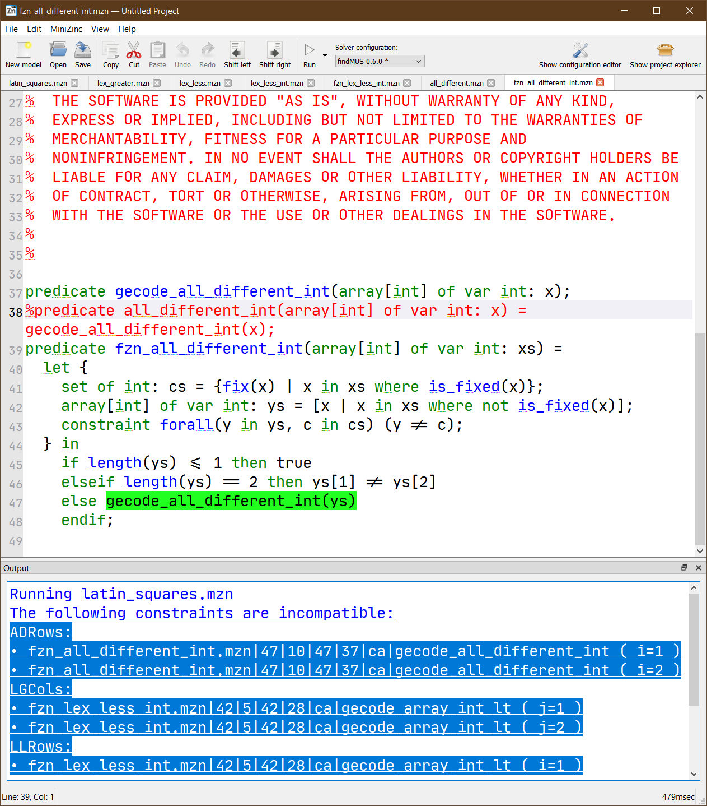

3.8. FindMUS¶
Version: 0.6.0
FindMUS [1] lists unsatisfiable subsets of constraints in your MiniZinc model. These subsets, called Minimal Unsatisfiable Subsets can help you to find faults in your unsatisfiable constraint model. FindMUS uses the hierarchical structure provided by the model to guide its search.
3.8.1. Basic Usage¶
To use FindMUS on the command line simply execute it on a model and set of data files by typing:
findMUS model.mzn data-1.dzn
This will perform a search for a single instance level MUS.
To acquire a low level MUS the --paramset fzn argument can be used.
To search for more than one MUS use the -a or -n
Note: FindMUS requires a fully instantiated constraint model.
3.8.1.1. Commandline arguments¶
The FindMUS tool supports the following arguments:
Driver options
The driver creates the map solver and sub-solver and requests MUSes from FindMUS’s enumeration algorithm HierMUS.
-n <count> Stop after the n th MUS is found (Default: 1)
-a Find all MUSes (equivalent to -n 0)
-t or --timeout <s> Stop search after s seconds (Default: 1800)
- --paramset hint,mzn,fzn
Use a preset collection of parameters. (Default: mzn) The mzn and fzn options can acquire MUSes in more detail.
hint –structure gen –depth mzn –shrink-alg map_lin
mzn –structure normal –depth mzn –shrink-alg map_qx
fzn –structure normal –depth fzn –shrink-alg map_qx
- --no-leftover
- Do not print leftover candidate on timeout If FindMUS is exploring an unsatisfiable subset when it runs out of time, it behaves as if the set could not be reduced to a smaller set and prints it as an MUS. The --no-leftover setting disables this behaviour as these sets can sometimes be quite large.
--frequent-stats Print statistics after every MUS discovered.
--no-progress Disable %%%mzn-progress output
--no-stats Disable output of initial parsing stats and summary stats
--output-{html, json, brief, human} Changes output mode
html HTML output mode for use with the MiniZinc IDE
json Simple json output (each MUS should be parsed separately)
brief Same as the default output mode but without outputting the traces (paths)
human Tries to format the MUS in a more readable form grouping constraints by their constraint names
Compiler Options
-g or --domains Record domain changes during compilation (same as minizinc -c -g)
--verbose-compile Pass --verbose to MiniZinc compiler
Enumeration options
The enumeration algorithm (HierMUS) explores the constraint hierarchy provided in the user’s model and proposes potential MUSes to the sub-solver. A shrink algorithm is used to reduce found UNSAT subsets to MUSes. There are currently four available shrink algorithms available with FindMUS.
- --shrink-alg lin,map_lin,qx,map_qx,qx2
Select shrink algorithm (Default: map_lin)
lin simple linear shrink algorithm.
map_lin alternative implementation of the linear algorithm that updates a global map of explored subsets while shrinking the subset.
qx uses the QuickXplain [4] algorithm to shrink the subset to a MUS.
map_qx is an alternative implementation of QuickXplain that uses the global map to split subsets, and to avoid repeating any SAT checks while shrinking
qx2 a lightweight alternative to map_qx that only uses the map to avoid repeating SAT checks.
- --depth mzn,fzn,<n>
How deep in the tree should search explore. (Default: mzn)
mzn expands the search as far as the point when the compiler leaves the MiniZinc model.
fzn expands search as far as the FlatZinc constraints.
<n> expand search to the n level of the hierarchy.
--restarts Enable restart to flat mode (plain Marco) if large run of SAT sets encountered
--seed
Subsolver options
FindMUS can be used in conjunction with any FlatZinc solver. These options mimic the minizinc arguments --solver and --fzn-flags. The behavior of these arguments is likely to change in later versions of the tool.
- --subsolver <s>
- Use solver s for SAT checking. (Default: “gecode”)
- --solver-flags <f>
- Pass flags f to sub-solver. (Default: empty)
- --solver-timelimit <ms>
- Set hard time limit for solver in milliseconds. (Default: 1100)
- --adapt-timelimit
- Automatically tighten solver timelimit based on performance during initial sanity check (prove background is SAT, background + entire foreground is UNSAT)
Filtering options
FindMUS can include or exclude constraints from its search based on the expression and constraint name annotations as well as properties of their paths (for example, line numbers). These filters are currently based on substrings but in future may support text spans and regular expressions.
- --soft-defines
- Consider functional constraints as part of MUSes
- --hard-domains
- Consider domain constraints (added by -g option) as background
- --named-only
- Only consider constraints annotated with string annotations
--filter-mode fg,ex Filtering mode
fg Foreground: Excluded items go to the background
ex Exclusive: Excluded items are omitted entirely (Useful if they are part of MUSes you are not interested in)
--filter-named <names> --filter-named-exclude <names> Include/exclude constraints with names that match sep separated names
--filter-path <paths> --filter-path-exclude <paths> Include/exclude based on paths
--filter-sep <sep> Separator used for named and path filters
Structure options
The structure coming from a user’s model can significantly impact the performance of a MUS enumeration algorithm. The hierarchy is constructed in two steps. The first takes the existing model structure and can modify it in several ways. The second step adds extra binary structure.
--structure flat,gen,normal,mix
Alters initial structure: (Default: gen)
flat Remove all structure
gen Remove instance specific structure (merges constraints)
normal No change
mix Apply gen before normal
idx Remove all location information
idxmix Apply idx before normal
--no-binarize
By default FindMUS will introduce extra binary structure to the hierarchy. This option disables this behaviour (This is likely to be the default in future since QX performs a type of binarization).
Verbosity options
--verbose-{map,enum,subsolve} <n> Set verbosity level for different components. Currently n can only take values 0, 1, and 2;
--verbose Set verbosity level of all components to 1
Misc options
--dump-dot <dot> Write tree in GraphViz format to file <dot>
3.8.1.2. Example¶
The following demonstrates the basic usage of FindMUS on a simple example. Below, we see a model for the latin squares puzzle [2] with some incompatible symmetry breaking constraints added.
% latin_squares.mzn
include "globals.mzn";
int: n = 3;
set of int: N = 1..n;
array[N, N] of var N: X;
constraint :: "ADRows"
forall (i in N)
(alldifferent(X[i,..]) :: "AD(row \(i))"
);
constraint :: "ADCols"
forall (j in N)
(alldifferent(X[..,j]) :: "AD(col \(j))"
);
constraint :: "LLRows"
forall (i in 1..n-1)
(lex_less(X[i,..], X[i+1,..]) :: "LL(rows \(i) \(i+1))"
);
constraint :: "LGCols"
forall (j in 1..n-1)
(lex_greater(X[..,j], X[..,j+1]) :: "LG(cols \(j) \(j+1))"
);
solve satisfy;
output [ show2d(X) ];
Here we have used the new constraint and expression annotations added in MiniZinc 2.2.0. Note that these annotations are not necessary for FindMUS to work but may help with interpreting the output. The first two constraints: ADRows and ADCols define the alldifferent constraints on the respective rows and columns of the latin square. The next two constraints LLRows and LGCols post lex constraints that order the rows to be increasing and the columns to be increasing. Certain combinations of these constraints are going to be in conflict.
Executing the command findMUS -n 2 latin_squares.mzn returns the following output. Note that the -n 2 argument requests that just the first two MUSes are found.
FznSubProblem: hard cons: 0 soft cons: 10 leaves: 10 branches: 11 Built tree in 0.02854 seconds.
MUS: 7 3 6 4 8
Brief: gecode_all_different_int;@{ADCols@AD(col 1)}:(j=1)
gecode_all_different_int;@{ADCols@AD(col 2)}:(j=2)
gecode_array_int_lt;@{LGCols@LG(cols 1 2)}:(j=1)
gecode_array_int_lt;@{LLRows@LL(rows 1 2)}:(i=1)
gecode_array_int_lt;@{LLRows@LL(rows 2 3)}:(i=2)
Traces:
latin_squares.mzn|18|5|20|9|ca|forall;latin_squares.mzn|18|5|20|9|ac;latin_squares.mzn|18|13|18|13|i=2;latin_squares.mzn|19|10|19|37|ca|lex_less
latin_squares.mzn|13|5|15|9|ca|forall;latin_squares.mzn|13|5|15|9|ac;latin_squares.mzn|13|13|13|13|j=1;latin_squares.mzn|14|10|14|30|ca|alldifferent
latin_squares.mzn|18|5|20|9|ca|forall;latin_squares.mzn|18|5|20|9|ac;latin_squares.mzn|18|13|18|13|i=1;latin_squares.mzn|19|10|19|37|ca|lex_less
latin_squares.mzn|13|5|15|9|ca|forall;latin_squares.mzn|13|5|15|9|ac;latin_squares.mzn|13|13|13|13|j=2;latin_squares.mzn|14|10|14|30|ca|alldifferent
latin_squares.mzn|22|5|24|9|ca|forall;latin_squares.mzn|22|5|24|9|ac;latin_squares.mzn|22|13|22|13|j=1;latin_squares.mzn|23|10|23|40|ca|lex_greater
MUS: 7 3 5 6 8 9
Brief: gecode_all_different_int;@{ADCols@AD(col 1)}:(j=1)
gecode_all_different_int;@{ADCols@AD(col 3)}:(j=3)
gecode_array_int_lt;@{LGCols@LG(cols 1 2)}:(j=1)
gecode_array_int_lt;@{LGCols@LG(cols 2 3)}:(j=2)
gecode_array_int_lt;@{LLRows@LL(rows 1 2)}:(i=1)
gecode_array_int_lt;@{LLRows@LL(rows 2 3)}:(i=2)
Traces:
latin_squares.mzn|18|5|20|9|ca|forall;latin_squares.mzn|18|5|20|9|ac;latin_squares.mzn|18|13|18|13|i=2;latin_squares.mzn|19|10|19|37|ca|lex_less
latin_squares.mzn|13|5|15|9|ca|forall;latin_squares.mzn|13|5|15|9|ac;latin_squares.mzn|13|13|13|13|j=1;latin_squares.mzn|14|10|14|30|ca|alldifferent
latin_squares.mzn|13|5|15|9|ca|forall;latin_squares.mzn|13|5|15|9|ac;latin_squares.mzn|13|13|13|13|j=3;latin_squares.mzn|14|10|14|30|ca|alldifferent
latin_squares.mzn|18|5|20|9|ca|forall;latin_squares.mzn|18|5|20|9|ac;latin_squares.mzn|18|13|18|13|i=1;latin_squares.mzn|19|10|19|37|ca|lex_less
latin_squares.mzn|22|5|24|9|ca|forall;latin_squares.mzn|22|5|24|9|ac;latin_squares.mzn|22|13|22|13|j=1;latin_squares.mzn|23|10|23|40|ca|lex_greater
latin_squares.mzn|22|5|24|9|ca|forall;latin_squares.mzn|22|5|24|9|ac;latin_squares.mzn|22|13|22|13|j=2;latin_squares.mzn|23|10|23|40|ca|lex_greater
Total Time: 0.39174 nmuses: 2 map: 40 sat: 21 total: 61
The first line, starting with FznSubProblem: provides some useful information for debugging the findMUS tool. Next we have the list of MUSes. Each MUS is described with three sections:
- MUS: lists the indices of the FlatZinc constraints involved in this MUS.
- Brief: lists the FlatZinc constraint name, the expression name, the constraint name, and the loop index assignments for each involved FlatZinc constraint.
- Traces: lists the MiniZinc paths corresponding to the constraints of the MUS. Each path typically contains a list of path elements separated by semi-colons ;. Each element includes a file path, a start line, start column, end line and end column denoting a span of text from the listed file. And finally, a description of the element. In the examples above all paths point to calls to a forall on different lines of the model. (ca|forall)
The final line of output lists the Total Time, the number of MUSes found, and some statistics about the number of times the internal map solver map was called, and the number of times the subproblem solver was called sat.
Interpreting these two MUSes we see that the lex constraints are incompatible with the alldifferent constraints.
3.8.2. Using FindMUS in the MiniZinc IDE¶
To use FindMUS in the MiniZinc IDE, upon discovering that a model is unsatisfiable. Select FindMUS from the solver configuration dropdown menu and click the solve button (play symbol). This will look for MUSes using the default --paramset mzn argument.
In this case we can see that the output pane shows the constraints involved in the MUS in terms of the expression annotations, grouped by the constraint annotations. Clicking on the MUS in the output pane will highlight the constraints in your model.
If finding MUSes with --paramset mzn is prohibitively slow, you can try running instead with --paramset hint. This merges many of the low level constraints into larger units and should be relatively fast and help locate the relevant constraint items. The following shows the result:
Selecting the returned MUS highlights three top level constraints as shown: ADRows, LLRows and LGCols.
Alternatively, in some cases you may wish to look at the MUSes of your model in terms of the flattened FlatZinc program. To display these MUSes run FindMUS with the --paramset fzn argument.
In this figure you can see that the MUSes are expressed in terms of FlatZinc constraints along with any assignments to relevant loop variables. Clicking on this MUS also opens and highlights the source of the constraints in the MiniZinc library (in this case in Gecode’s custom redefinition of fzn_all_different_int.
3.8.3. How it works¶
A simple explanation of the algorithm is presented here. For a more detailed exploration of an earlier version of the approach see the Debugging Unsatisfiable Constraint Models paper [1].
The approach takes the full FlatZinc program and partitions the constraints into groups based on the hierarchy provided in the user’s model. To begin with (at depth ‘1’) we search for MUSes in the set of top level constraint items using the MARCO [3] MUS enumeration algorithm. If we are not at the target depth we recursively select a found MUS, split its constituent constraints into lower level constraints based on the hierarchy and begin another search for MUSes underneath this high-level MUS. If any MUSes are found we know that the high-level MUS is not minimal and so it should not be reported. This process is repeated on any found unsatisfiable subsets until we reach the required depth at which point we will start to report MUSes. If in the recursive search we return to a high-level MUS without finding any sub-MUSes we can report this MUS as a real MUS. This recursive process is referred to as HierMUS. At each stage when we request the enumeration of a set of MUSes underneath a high-level MUS we can use one of several MUS enumeration algorithms.
3.8.4. Performance tips¶
If you are trying to find MUSes in a very large instance it is advised to make use of the filtering tools available. Use the default settings to find a very high-level MUS and then use the --depth option to find lower-level, more specific MUSes in conjunction with the --filter-name and --filter-path options to focus on finding specific sub-MUSes of a found high-level MUS.
When parameter tuning for FindMUS the oracle checker mode can speed up testing of different sets of parameters.
- Run findMUS -a --paramset fzn --output-brief ... > muses.log to save the output log to a file.
- Run subsequent sets of parameters with findMUS -a --paramset fzn --output-brief --oracle-only muses.log .... The oracle mode will perform enumeration without making calls to the sub-solver, instead deciding SAT/UNSAT based on the MUS log (omit --oracle-only to call the sub-solver when the status of a subset is unknown)
3.8.5. Limitations / Future work¶
There are several features that we aim to include quite soon:
- Solver core/MUS/IIS integration
- Set shrinking can be accelerated by using problem specific MUS extraction methods that some solvers provide.
- Context-find
- Once a MUS has been found flip the foreground + background and narrow down the parts of the background that complete the MUS
- Regular expression based filtering
- This will allow more complex filtering to be used.
- Text span based filtering
- This will allow a user to simply click-and-drag a selection around the parts of a constraint model they wish to analyse.
| [1] | (1, 2) Leo, K. et al., “Debugging Unsatisfiable Constraint Models”, 2017. |
| [2] | https://en.wikipedia.org/wiki/Latin_square |
| [3] | Liffiton, M. H. et al., “Fast, Flexible MUS Enumeration”, 2016. |
| [4] | Junker, U. et al., “QUICKXPLAIN: preferred explanations and relaxations for over-constrained problems”, 2004. |